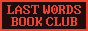

← Return to Homepage — Reading Log
Reading Log
Yeah, I have a GoodReads, sure. But I like keeping lists on my own website, too, you know? Below are books I've read, categorized by year, then in order of reading. Favorites are highlighted.
Books Read in 2023
Just getting started.
- What Moves the Dead — T. Kingfisher
- The Hands of Onan – Chris DiLeo
- The Haunting of Hill House — Shirley Jackson
- Daphne – Josh Malerman
Books Read in 2022
I read very little this year. Oops!
- Universal Harvester — John Darnielle
- Experimental Film — Gemma Files
- The Ruins — Scott Smith
Books Read in 2021
In 2021, I read the most I've ever read in my life. Not sure what sparked this fire, but it was a great time. I read 50 books and discovered a couple all-time favorites.
- In the House in the Dark of the Woods — Laird Hunt
- Fever Dream — Samantha Schweblin
- The Boatman’s Daughter — Andy Davidson
- The Memory Police — Yōko Ogawa
- Horrorstör — Grady Hendrix
- The Twisted Ones — T. Kingfisher
- The Troop — Nick Cutter
- City of the Dead (Resident Evil #3) — S.D. Perry
- Ring Shout — P. Djèlí Clark
- Mr. Splitfoot — Samantha Hunt
- Silent Hill 2 (Boss Fight Books #27) — Mike Drucker
- Fear and Loathing in Las Vegas — Hunter S. Thompson
- Ring (Ring #1) — Kōji Suzuki
- ‘Salem’s Lot — Stephen King
- Smashed: Junji Ito Story Collection — Junji Ito
- Paul Tremblay — A Head Full of Ghosts
- Spiral (Ring #2) — Kōji Suzuki
- Satan’s Silence — Debbie Nathan
- In the Miso Soup — Ryū Murakami
- Loop (Ring #3) — Kōji Suzuki
- No Longer Human — Junji Ito
- The Bong-Ripping Brides of Count Drogado — Dave K.
- Disappearance at Devil’s Rock — Paul Tremblay
- The Only Good Indians — Stephen Graham Jones
- All Systems Red (The Murderbot Diaries #1) — Martha Wells
- Later — Stephen King
- Songs of a Dead Dreamer and Grimscribe — Thomas Ligotti
- Mongrels — Stephen Graham Jones
- The Grip of It — Jac Jemc
- The New Annotated Dracula — Bram Stoker
- Night of the Mannequins — Stephen Graham Jones
- Carmilla — J. Sheridan le Fanu
- We Have Always Lived in the Castle — Shirley Jackson
- Death in her Hands — Ottessa Moshfegh
- Itchy, Tasty: An Unofficial History of Resident Evil — Alex Aniel
- Things Have Gotten Worse Since We Last Spoke — Eric Larocca
- Cat Diary: Yon & Muu — Junji Ito
- The Glassy, Burning Floor of Hell — Brian Evenson
- Nightbitch — Rachel Yoder
- Sensor — Junji Ito
- My Heart is a Chainsaw — Stephen Graham Jones
- The Cabin at the End of the World — Paul Tremblay
- Come Closer — Sara Gran
- Wytches, Volume 1 — Scott Snyder
- Men, Women, and Chain Saws — Carol J. Clover
- Razorblade Tears — S.A. Cosby
- Yours Cruelly, Elvira — Cassandra Peterson
- The Ballad of Black Tom — Victor Lavalle
- Frankenstein — Junji Ito
- The Indifferent Stars Above — Daniel James Brown
Currently Reading
Between Two Fires by Christopher Buehlman
Reading Lists
2023 Books
2022 Books
2021 Books
Book Reviews
Favorite Genre
𝔥𝔬𝔯𝔯𝔬𝔯
Favorite Books
01. The Mysterious Stranger
02. Head Full of Ghosts
03. The Only Good Indians
04. In the House in the Dark of the Woods
05. Pet Sematary
Favorite Authors
01. Paul Tremblay
02. Stephen Graham Jones
03. Stephen King
Book Club
 ↗